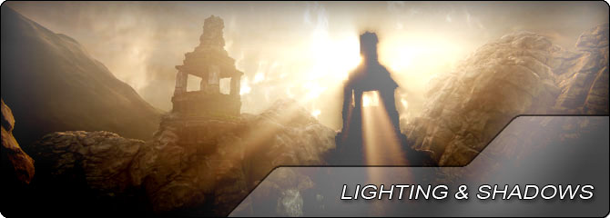

UDN
Search public documentation:
LightingAndShadowsHome
日本語訳
中国翻译
한국어
Interested in the Unreal Engine?
Visit the Unreal Technology site.
Looking for jobs and company info?
Check out the Epic games site.
Questions about support via UDN?
Contact the UDN Staff
中国翻译
한국어
Interested in the Unreal Engine?
Visit the Unreal Technology site.
Looking for jobs and company info?
Check out the Epic games site.
Questions about support via UDN?
Contact the UDN Staff
UE3 Home > Lighting & Shadows
Lighting & Shadows

When it comes to creating believable environments, the way the geometry within the level is lit plays an extremely important role. The human eye and brain expect light to interact with surfaces, fill a room, or cast shadows in a particular way. Anything that deviates from this can break up the immersive experience for the user.
Unreal Engine 3's lighting system is very flexible, allowing for different types of lights and shadows to all be used in harmony to create just the right look for any game. The Lightmass static global illumination lighting system makes setting up entire environments extremely easy as most of the leg-work is done by the lighting build process and dominant lights provide for detailed shadows without sacrificing performance.
- Lightmass - Overview of the Lightmass static global illumination system.
- Dominant Lights - Overview of Dominant Light actors and how they function within Unreal Engine 3.
- Light Environments - Optimized dynamic object lighting.
- Light Functions - Overview of how light functions work in Unreal Engine 3.
- Lighting Reference - Overview of the old (pre-Lightmass) lighting system in Unreal Engine 3.
- Shadowing Reference - Overview of the different types of shadows used in Unreal Engine 3.
- Modulated Shadows - Alternative to normal dynamic shadows.
- Distance Field Shadows - Precomputed shadows with improved quality and memory.
- Texture Defined Specular Reflection - Using a Texture Defined Specular Reflection Lighting Model.
- Volumetric Lighting Guide - Guide to using volumetric lighting effects.
- Anisotropic Lighting - How to use the anisotropic lighting model in materials.
- Custom Lighting - How to use the custom lighting model in materials.
- Fake Mesh Lighting - Faking lighting on meshes or particles through materials.
- Lightmass Tools - Useful tools for the Lightmass lighting system.
- Deferred Shading in DirectX 11 - Overview of UE3's DirectX 11 deferred shading pipeline.
- Using Light Functions - Guide to creating lighting effects such as flickering and strobing lights.
- Character Lighting - Tips for lighting characters in-game.
- Volumetric Lightbeam Tutorial - Creating fake volumetric light beams.